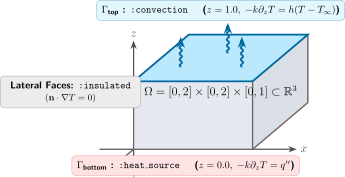

Geometry tutorial
Bramble.jl provides a high-performance, zero-allocation geometric modeling subsystem designed for partial differential equations (PDEs) and numerical discretization schemes on Cartesian and tensor-product meshes.
In this tutorial, you will learn how to:
Construct 1D intervals and multi-dimensional
CartesianProducts.Handle collapsed (lower-dimensional) geometries.
Query spatial and topological dimensions, bounds, centers, and containment.
Define boundary labels and markers with
markers.Build complete computational
Domains ready for mesh generation and PDE solvers.
1. Sets and intervals
At the core of the geometry system is CartesianProduct{D, T}, which represents the Cartesian product of $D$ closed intervals in $\mathbb{R}^D$ with coordinate type T.
1.1 Creating 1D intervals
Use interval to define closed intervals $[a, b] \subset \mathbb{R}$:
using Bramble
# Define the interval [0.0, 1.0]
I = interval(0.0, 1.0)
# Automatic conversion of integer bounds to floating point
I_int = interval(0, 2) # CartesianProduct{1, Float64}
# Create a single degenerate point [0.5, 0.5]
P = point(0.5)
# Bounding box of any two numbers (ordered automatically)
B = box(1.5, 0.2) # [0.2, 1.5]1.2 Multi-dimensional sets via the tensor product operator ×
Multi-dimensional hyper-rectangles are constructed intuitively by taking the tensor product of lower-dimensional sets using the × (\times<tab>) operator:
# 2D Unit square: [0, 1] × [0, 1]
Ω_2d = interval(0.0, 1.0) × interval(0.0, 1.0)
# 3D Cuboid: [-1, 1] × [0, 2] × [0, 0.5]
Ω_3d = interval(-1.0, 1.0) × interval(0.0, 2.0) × interval(0.0, 0.5)Alternatively, you can construct products directly using tuples of interval pairs:
# Direct tuple construction
Ω_2d = cartesian_product(((0.0, 1.0), (0.0, 2.0)))2. Querying geometric properties
Bramble.jl provides a comprehensive, type-stable query interface:
X = interval(0.0, 2.0) × interval(-1.0, 1.0)
# Spatial embedding dimension (D = 2)
dim(X) # 2
# Topological dimension
topo_dim(X) # 2
# Interval bounds
tails(X) # ((0.0, 2.0), (-1.0, 1.0))
tails(X, 1) # (0.0, 2.0) -- bounds in dimension 1
tails(X, 2) # (-1.0, 1.0) -- bounds in dimension 2
# Geometric center
center(X) # (1.0, 0.0)
# 1D projection onto a specific axis
proj_x = projection(X, 1) # interval(0.0, 2.0)Point containment
Check whether a point lies within a CartesianProduct:
# In 1D:
I = interval(0.0, 1.0)
0.5 ∈ I # true
1.5 ∈ I # false
# In 2D (supports Tuples, SVector, and Vectors):
X = interval(0.0, 1.0) × interval(0.0, 1.0)
(0.5, 0.5) ∈ X # true
(1.2, 0.3) ∈ X # false3. Collapsed and lower-dimensional geometries
A dimension is considered collapsed if its interval is degenerate ($a = b$). Bramble accurately tracks collapsed dimensions without heap allocations, enabling seamless modeling of lower-dimensional surfaces or interfaces embedded in higher-dimensional spaces:
# 1D line embedded in 2D space: x ∈ [0, 1], y = 0
line_in_2d = interval(0.0, 1.0) × point(0.0)
dim(line_in_2d) # 2 (spatial embedding dimension)
topo_dim(line_in_2d) # 1 (topological dimension)
# Check if individual dimensions are collapsed
line_in_2d.collapsed[1] # false (x-axis is extended)
line_in_2d.collapsed[2] # true (y-axis is collapsed)4. Boundary markers
PDE boundary conditions require tagging specific domain boundaries (e.g., Dirichlet, Neumann, Robin, inflow/outflow).
4.1 Boundary symbol conventions
For a $D$-dimensional domain, the standard boundary facets are:
1D:
:left,:right2D:
:bottom,:top,:left,:right3D:
:bottom,:top,:back,:front,:left,:right
You can inspect standard boundary symbols using get_boundary_symbols:
get_boundary_symbols(2)
# (:bottom, :top, :left, :right)4.2 Creating markers
Markers are defined as :label => identifier pairs where identifier can be a single boundary symbol, a tuple of symbols, or a boolean function:
geom = interval(0.0, 5.0) × interval(0.0, 1.0)
# 1. Using the markers() constructor
# Define markers using pairs of :label => boundary_spec
m1 = markers(
geom,
:inflow => :left,
:outflow => :right,
:wall => (:top, :bottom)
)
# Retrieve all defined labels
collect(labels(m1))
# [:inflow, :outflow, :wall]4.3 Function-based and time-dependent markers
You can also define internal or geometric subset markers using boolean condition functions, as well as time-dependent markers:
# Condition-based marker: tag a subsection of the boundary or domain
m_cond = markers(
geom,
:inflow => :left,
:hot_spot => (p -> p[1] > 2.5 && p[2] ≈ 0.0)
)
# Time-dependent markers:
time_span = interval(0.0, 10.0)
m_time = markers(
geom,
time_span,
:moving_source => ((p, t) -> norm(p .- [t, 0.5]) < 0.2)
)
# Evaluate time-dependent markers at time t = 1.5
m_evaluated = m_time(1.5)5. Computational domains
A Domain joins a geometric set (CartesianProduct) with its boundary markers into a single unified object:
# 1. Define geometry
geom = interval(0.0, 1.0) × interval(0.0, 1.0)
# 2. Construct domain with inline boundary markers
Ω = domain(
geom,
:dirichlet => (:left, :right),
:neumann => (:top, :bottom)
)
# Or create a default domain marking all external boundaries as :boundary
Ω_default = domain(geom)5.1 Domain traits
Domain automatically delegates geometric and marker methods directly:
dim(Ω) # 2
topo_dim(Ω) # 2
tails(Ω) # ((0.0, 1.0), (0.0, 1.0))
center(Ω) # (0.5, 0.5)
(0.5, 0.5) ∈ Ω # true
# Access underlying set and markers
set(Ω) # CartesianProduct{2, Float64}
markers(Ω) # DomainMarkers
collect(labels(Ω)) # [:dirichlet, :neumann]6. Practical examples
Example 1: 1D rod with mixed boundary conditions
Consider heat conduction along a 1D rod $\Omega = [0, L]$ with $L = 10.0$, fixed temperature at $x = 0$ (:left) and insulated end at $x = L$ (:right):

L = 10.0
rod_geom = interval(0.0, L)
# Define domain with Dirichlet left boundary and Neumann right boundary
rod = domain(
rod_geom,
:dirichlet => :left,
:neumann => :right
)
println("Domain: ", rod)
println("Dimension: ", dim(rod))
println("Active Labels: ", collect(labels(rod)))Example 2: 2D channel flow domain
Consider fluid flow in a rectangular channel $[0, 5] \times [0, 1]$ with an inflow on the left, outflow on the right, and no-slip walls on top and bottom:

channel_geom = interval(0.0, 5.0) × interval(0.0, 1.0)
channel = domain(
channel_geom,
:inflow => :left,
:outflow => :right,
:wall => (:top, :bottom)
)
@assert dim(channel) == 2
@assert (2.5, 0.5) ∈ channel
println("Channel labels: ", collect(labels(channel)))Example 3: 3D heat sink domain
Consider heat dissipation across a 3D block $[0, 2] \times [0, 2] \times [0, 1]$ subjected to a bottom heat source, top convective cooling, and insulated lateral walls:

sink_geom = interval(0.0, 2.0) × interval(0.0, 2.0) × interval(0.0, 1.0)
sink = domain(
sink_geom,
:heat_source => :bottom,
:convection => :top,
:insulated => (:left, :right, :front, :back)
)
println("3D Domain Center: ", center(sink))
println("Active Labels: ", collect(labels(sink)))